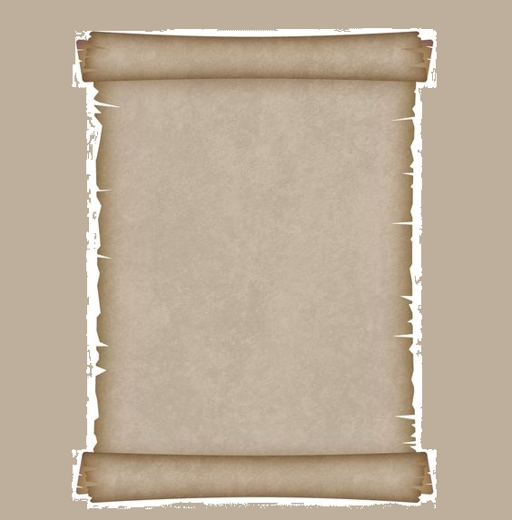

Saudações, Meneceu.
⠀⠀⠀Habitua-te à crença de que a morte não nos diz respeito, dado que todo o mal e todo o bem assentam na
sensação e a sensação acaba com a morte. Logo, a crença verdadeira de que a morte nada é para nós faz
uma vida mortal feliz, não ao acrescentar-lhe um tempo infinito, mas ao eliminar o desejo de
imortalidade.
⠀⠀⠀Pois não há razão para que o homem que tem plena certeza de que nada há a recear na morte encontre
algo que recear na vida. Assim, também é tolo quem diz que receia a morte não por ser dolorosa quando
chegar mas por ser dolorosa a sua antecipação; pois o que não é um peso quando está presente é doloroso
sem razão quando é antecipado. A morte, o mais temido dos males, não nos diz consequentemente respeito;
pois enquanto existimos a morte não está presente, e quando a morte está presente nós já não existimos.
Nada é portanto nem para os vivos nem para os mortos visto que não está presente nos vivos, e os mortos
já não são.
⠀⠀⠀Mas os homens em geral por vezes fogem da morte como o maior dos males, por vezes almejam-na como um
alívio para os males da vida. O homem sábio nem renuncia à vida nem receia o seu fim; pois a vida não o
ofende, nem supõe que não viver é de algum modo um mal. Tal como não escolhe a comida da qual há maior
quantidade mas a que é mais agradável, também não procura a satisfação da vida mais longa mas sim a da
mais feliz.
⠀⠀⠀Quem aconselha o jovem a viver bem e o velho a morrer bem é tolo não apenas porque a vida é
desejável, mas também porque a arte de viver bem e a arte de morrer bem são uma só. Contudo, muito pior
é quem diz que é bom não ter nascido mas, uma vez nascido, que o melhor é passar depressa pelos portões
do Hades.
⠀⠀⠀Se um homem diz isto e realmente acredita nisto, por que razão não se retira da vida? Certamente que
os meios estão à mão se for realmente essa a sua convicção. Se o diz a zombar, é visto como um tolo
entre quem não aceita o seu ensinamento.
Atenciosamente, Ἐπίκουρος
Carta completa